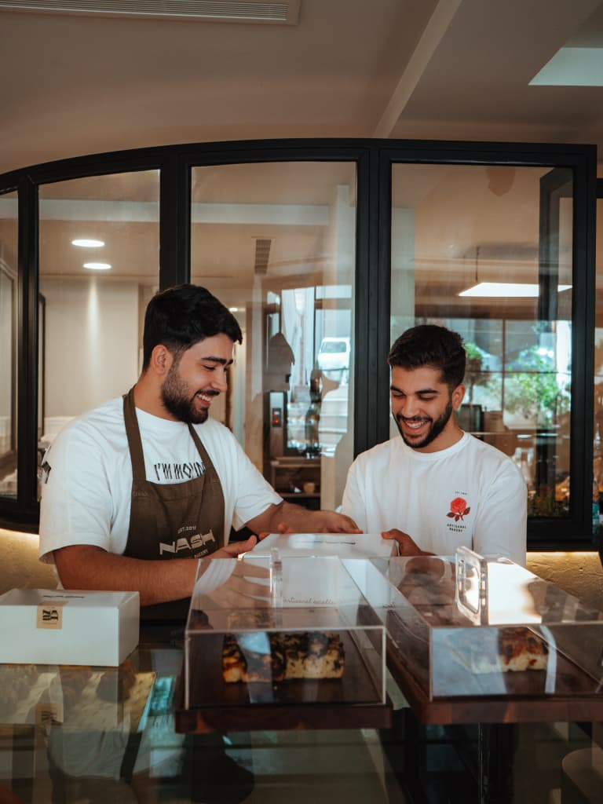
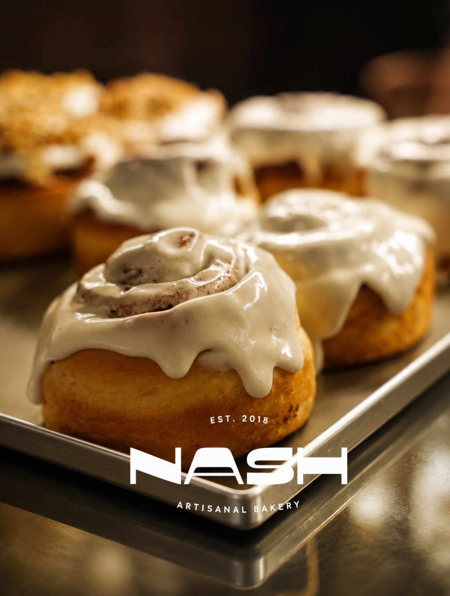

House favourite
Pistachio cake
Ground pistachio in the crumb, rosewater in the cream.
Damascus · every day, 10:00–00:00
Nash has been baking in Damascus since 2018. Cakes, cookies, cinnamon rolls, bread — all of it mixed, proved and baked on the premises, the same day you buy it. Nothing is held over to the next morning, which is the whole reason we sell out.


Nothing sits
overnight
first time? start here
House favourite
Ground pistachio in the crumb, rosewater in the cream.

First out of the oven
Iced while still warm. They rarely last the morning.

Seasonal
Semolina shortbread pressed around date paste.

Dark sponge, chocolate cream, ganache poured over the top.

Vanilla sponge, whipped cream, whatever fruit is good that week.

Ground pistachio in the crumb, rosewater in the cream.

Sharp lemon curd under torched meringue.

Baked, not set. Plain or with berries.

Small, dark, and iced by hand every morning.

Out of the oven first thing and iced while still warm. They rarely last the morning.

Soft in the middle, baked in small batches all day.

Short and crumbly, rolled in chopped pistachio.

Filled with almond cream and baked a second time.

Semolina shortbread pressed around date paste. Seasonal.

Hot and black, and good with anything from the cake list.

Coffee with steamed milk.

Black tea, served in a glass.

Thick and dark, for the colder evenings.

Over ice with a slice of lime.
Open daily
Every day, 10:00–00:00
We have never published a street address — the map pin is exact, and the smell of the ovens does the rest.
Tag us and your photo could end up here.
Anything else, call us on 0987 514 666 or ask at the counter.
Every day from 10:00 to 00:00.
Yes, through BeeOrder and Movo. Both carry the full counter, though the bread goes fastest.
Yes. Call at least a day ahead and tell us the size — anything on the cake list can be made whole.
The first bake lands when we open at 10:00 and there is a second batch in the afternoon. Cinnamon rolls are a morning thing and rarely survive past noon.
In Damascus. We have never published a street address, so tap “Get directions” above and the map pin will take you to the door.